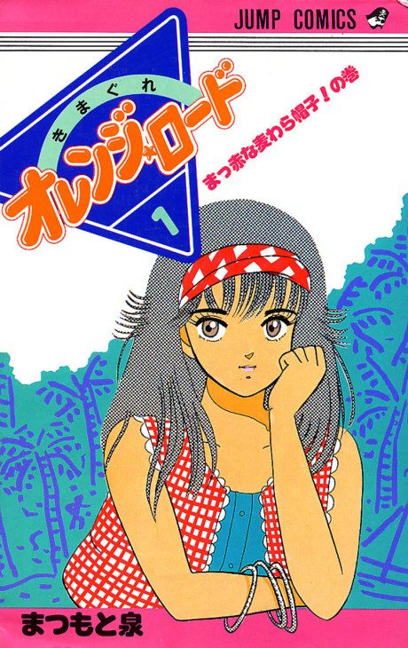

Anime
Anime
Manga1987 · Action, Comedy, Drama
Kimagure Orange Road
きまぐれオレンジ☆ロード
AniList7.1
Animeter—
Episodes48 ep
MangaUnclear
Watch order
In airing order. Episode numbers on this site count straight through every season, so season 2 starts at episode —.
1
1987 · TV
Kimagure Orange Road
Episodes1–4848 ep
Films, OVAs and specials
Not counted in the episode numbers above.
·
1988 · Film
Kimagure Orange Road: I Want to Return to That Day
·
1996 · Film
Kimagure Orange Road: Summer's Beginning
Sources: AniList